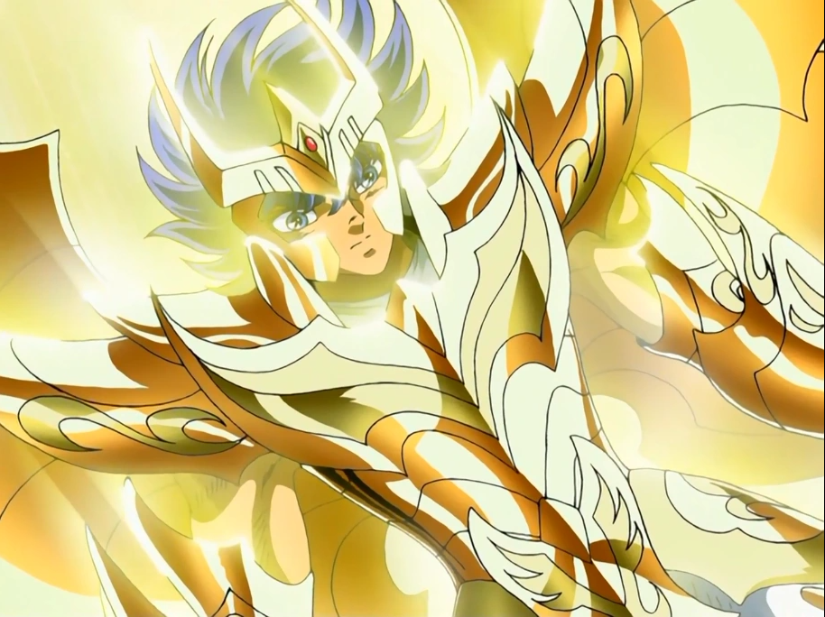

Ikki (一輝, Ikki) es el Saint de la constelación de Phoenix. Es uno de los protagonistas en Saint Seiya y en Saint Seiya: Next Dimension. Se caracteriza por tener el cosmos más agresivo y violento entre los Saints. Acostumbra andar separado del resto de los Bronze Saints, sin embargo siempre aparece oportunamente en los momentos de necesidad. Se considera a sí mismo un lobo solitario que no le interesa andar en grupos. A pesar de que se introdujo más tarde que los otros cuatro Bronze Saints principales, el rol de Ikki en la historia es bastante significativo. Además, actúa como el primer antagonista de la serie que los demás Saints deben derrotar, así como un poderoso aliado más adelante en la serie.
